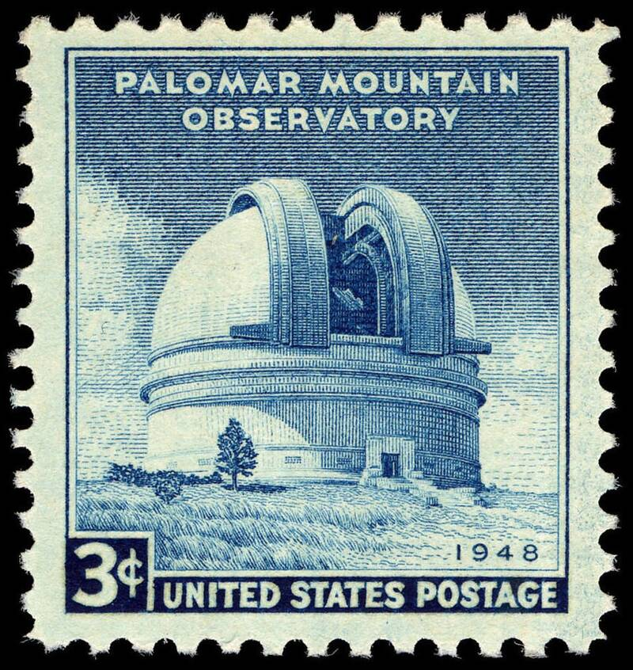

Palomar Observatory
San Diego County, California

Caltech's mountaintop observatory, where the first Palomar Observatory Sky Survey photographed the northern sky on glass plates from 1949 into the late 1950s. Brief flashes on those plates are at the center of a 2025 debate over whether objects orbited Earth before Sputnik. 1,2
Open in the interactive Watcher
Related
- Menzel destroyed Harvard's sky plates to hide evidence of UFOs Claim
- Artificial objects orbited Earth before Sputnik Claim
- Beatriz Villarroel Person
- Stephen Bruehl Person
Sources
- Transients in the Palomar Observatory Sky Survey (POSS-I) may be associated with nuclear testing and reports of unidentified anomalous phenomena (Bruehl & Villarroel) Scientific Reports, via PubMed Central, Oct. 20, 2025
- Aligned, Multiple-transient Events in the First Palomar Sky Survey (Villarroel et al., PASP 137, 104504) Instituto de Astrofísica de Canarias, Oct. 2025